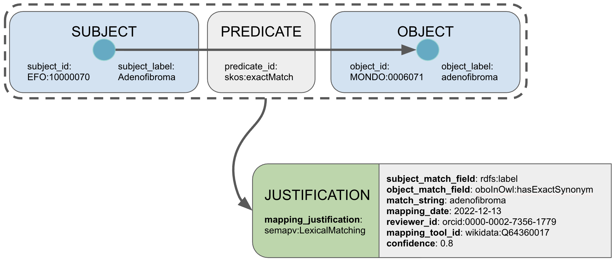

Getting started
Getting Started with SSSOM
Pre-requisites:
- You know what a mapping is.
Creating SSSOM files
SSSOM files are typically created as spreadsheets and shared as TSV files. Tools exist to translate SSSOM files in TSV format into other formats such as JSON and RDF. The ability to curate SSSOM files as spreadsheets makes them accessible, especially in scientific communities, compared to more technical formats such as JSON or RDF. However, this simplicity comes with trade-offs — spreadsheet-based curation can make it harder to ensure that files are valid (see this discussion). Using a proper validation tool (see below) is therefore strongly recommended.
Let's look at a real-world example: mappings between the Human Phenotype Ontology (HP) and the Mammalian Phenotype Ontology (MP), derived from the uPheno project.
| subject_id | subject_label | predicate_id | object_id | object_label | mapping_justification |
|---|---|---|---|---|---|
| HP:0000175 | Cleft palate | skos:exactMatch | MP:0000111 | cleft palate | semapv:LexicalMatching |
| HP:0000252 | Microcephaly | skos:exactMatch | MP:0000433 | microcephaly | semapv:LexicalMatching |
| HP:0000822 | Hypertension | skos:exactMatch | MP:0000231 | hypertension | semapv:LexicalMatching |
| HP:0001596 | Alopecia | skos:exactMatch | MP:0000414 | alopecia | semapv:LexicalMatching |
| HP:0001627 | Abnormal heart morphology | skos:exactMatch | MP:0000266 | abnormal heart morphology | semapv:LexicalMatching |
A SSSOM file contains two main sections:
- A header
- The mappings
The header contains additional metadata about the mapping set, such as the license or description:
# curie_map:
# HP: http://purl.obolibrary.org/obo/HP_
# MP: http://purl.obolibrary.org/obo/MP_
# owl: http://www.w3.org/2002/07/owl#
# rdf: http://www.w3.org/1999/02/22-rdf-syntax-ns#
# rdfs: http://www.w3.org/2000/01/rdf-schema#
# semapv: https://w3id.org/semapv/vocab/
# skos: http://www.w3.org/2004/02/skos/core#
# sssom: https://w3id.org/sssom/
# license: https://creativecommons.org/publicdomain/zero/1.0/
# mapping_provider: http://purl.obolibrary.org/obo/upheno.owl
# mapping_set_id: https://w3id.org/sssom/mappings/27f85fe9-8a72-4e76-909b-7ba4244d9ede
You can look at an example TSV file on GitHub.
Basic anatomy of a mapping

You should think of a mapping in the SSSOM-sense as a triple between a subject (the "mapping source") and an object (the "mapping target") via a predicate (such as "exact match"). In SSSOM, every mapping can have a lot of metadata associated with it, like who created it (creator_id), and when, and how confident we are in its truthfulness.
Conceptually, we consider the sum total of all metadata collected for a mapping its "justification" - essentially the "evidence" provided towards the mapping.
Identifiers in SSSOM
SSSOM files use so-called CURIEs (Compact URIs) to identify the subject and
object of a mapping. As you can see in the example in the previous section, the
object of the first mapping is MP:0000111, a term from the Mammalian Phenotype
Ontology. As you can see in the mandatory curie_map, the MP prefix
represents the http://purl.obolibrary.org/obo/MP_ namespace. Using a
curie_map serves two purposes (1) it unambiguously identifies the entity being
mapped. Prefixes can clash easily: the prefix ICD all by itself can refer to
ICD-10 Clinical Modification, ICD-10 WHO Edition, ICD-11 Foundation, ICD-11 MMS
Linearisation, ICD-9, etc. (2) they serve as the prefix expansion instruction
for RDF serialisations. To convert for example MP:0000111 into an RDF entity,
we first expand it to http://purl.obolibrary.org/obo/MP_0000111.
Why can't I use URIs instead of CURIEs in my TSV file?
The SSSOM/TSV format requires all identifiers to be in CURIE form. This is enforced by SSSOM validators.
CURIEs are much more readable than full URIs/URLs, making your mapping files more compact and easier to work with.
All prefixes used in your CURIEs must be declared in the curie_map.
Mapping predicates
The predicate_id specifies the mapping relation between subject and object.
Any predicate identifier may be used, but if you are just getting started, it is
best to stick to the
common predicates. The
most frequently used ones are:
| Predicate | When to use |
|---|---|
skos:exactMatch |
The subject and object can be used interchangeably in most contexts. |
skos:broadMatch |
The object is a broader/more general concept than the subject. |
skos:narrowMatch |
The object is a narrower/more specific concept than the subject. |
skos:closeMatch |
The two are similar enough to be interchangeable in some contexts, but not all. |
skos:relatedMatch |
The two are associated in some way, but not interchangeable. |
Basic SSSOM Metadata
Every SSSOM mapping set has two levels of metadata: metadata about the mapping set as a whole, and metadata about each individual mapping.
Required metadata for the mapping set (see MappingSet for the full description of all fields):
| Field | Description |
|---|---|
mapping_set_id |
A globally unique identifier (URI) for this mapping set, e.g. https://w3id.org/sssom/tutorial/example1.sssom.tsv. |
license |
A URL to the license, e.g. https://creativecommons.org/licenses/by/4.0/. |
curie_map |
A dictionary that maps CURIE prefixes to their IRI expansions. |
Other commonly used set-level metadata includes mapping_set_description,
mapping_set_version, subject_source, object_source, and creator_id.
Required metadata for each mapping (see Mapping for the full description of all fields):
| Field | Description |
|---|---|
subject_id |
The CURIE of the entity being mapped (the "source"). |
predicate_id |
The mapping relation (e.g. skos:exactMatch). |
object_id |
The CURIE of the entity being mapped to (the "target"). |
mapping_justification |
How the mapping was determined, e.g. semapv:ManualMappingCuration. |
Other commonly used mapping-level metadata includes subject_label,
object_label, confidence, author_id, mapping_date, and comment.
For a comprehensive list, see the Quick reference for mapping metadata.
Mapping justifications
Every mapping in SSSOM must come with a justification - an indication of how
the mapping was established. You can think of it as the "evidence type" for the
mapping. Justifications are terms from the
Semantic Mapping Vocabulary (SEMAPV),
specifically the terms under
MatchingProcess.
Some common justifications:
| Justification | When to use |
|---|---|
semapv:ManualMappingCuration |
A human curator determined that the mapping is correct. |
semapv:LexicalMatching |
The mapping was established by matching labels or synonyms. |
semapv:LogicalReasoning |
The mapping was inferred through logical reasoning. |
semapv:SemanticSimilarityThresholdMatching |
The mapping was established by computing semantic similarity above a threshold. |
semapv:MappingReview |
The mapping was determined through a formal review process. |
If you are manually curating your mappings, semapv:ManualMappingCuration is
the right choice. For more detail on how to construct more nuanced
justifications, see the
Guide to using Mapping Justifications.
Validating your SSSOM files
To check that your SSSOM files are valid, you can use the
SSSOM Toolkit (also known as sssom-py). After
installing it,
you can validate a file like this:
$ wget https://w3id.org/biopragmatics/biomappings/sssom/biomappings.sssom.tsv
$ pip install sssom-py
$ sssom validate biomappings.sssom.tsv
This will check that all required fields are present, that the CURIEs are
properly declared in the curie_map, and that values conform to the expected
types.
Alternatively, if you prefer a Java-based tool,
sssom-java's sssom-cli can also
validate SSSOM files. See the
sssom-cli examples
for details.
Converting SSSOM files into other formats
The SSSOM Toolkit can convert your TSV mapping sets into other formats:
sssom convert my-mappings.sssom.tsv --output my-mappings.owl --output-format owl
sssom convert my-mappings.sssom.tsv --output my-mappings.json --output-format json
sssom-java's sssom-cli
can also convert between formally defined SSSOM serialisation formats (TSV,
JSON, and RDF/Turtle).
For detailed information about the different serialisation formats, see SSSOM/TSV, OWL/RDF, and JSON.
Storing and sharing SSSOM files
SSSOM files are plain text (TSV), so they can be stored and version-controlled just like any other text file, for example in a GitHub repository. If your mappings are converted to RDF, they can also be loaded into a triple store or ontology repository.
You may also choose to develop your mapping file in a columnar format like Excel or Google Sheets, and then convert to TSV. For many people this will be the easiest way to work with mapping files. Those with GitHub Actions experience can automate the conversion whenever source files change.
Using SSSOM files
So far we have focused on how to create SSSOM files. But what can you actually do with them?
Programmatic access with sssom-py
The SSSOM Toolkit provides a Python API for loading, manipulating, and querying mapping sets:
from sssom.parsers import parse_sssom_table
# Load an SSSOM TSV file
msdf = parse_sssom_table("my-mappings.sssom.tsv")
# Access the mapping set metadata
print(msdf.metadata)
# Access the mappings as a pandas DataFrame
df = msdf.df
print(df.head())
Common operations with the SSSOM Toolkit
The SSSOM Toolkit CLI supports a range of useful operations. Here are some of the most common ones:
- Merging mapping sets from different sources into one:
bash
sssom merge mappings1.sssom.tsv mappings2.sssom.tsv --output merged.sssom.tsv
- Filtering mappings, for example by predicate:
bash
sssom filter my-mappings.sssom.tsv --predicate_id skos:exactMatch -o exact-only.sssom.tsv
- Diffing two mapping sets to see what changed:
bash
sssom diff mappings-v1.sssom.tsv mappings-v2.sssom.tsv --output diff.tsv
For a more detailed walkthrough, see the SSSOM Toolkit guide and the sssom-py documentation.
Using SSSOM in Java with sssom-java
sssom-java is a Java implementation of SSSOM developed by Damien Goutte-Gattat. It provides reading and writing support for SSSOM/TSV and JSON formats, and can be used as a library in your own Java applications or as a ROBOT plugin.
To add sssom-java to your Maven project:
<dependency>
<groupId>org.incenp</groupId>
<artifactId>sssom-core</artifactId>
<version>1.10.0</version>
</dependency>
Reading and iterating over mappings:
import org.incenp.obofoundry.sssom.TSVReader;
import org.incenp.obofoundry.sssom.model.MappingSet;
import org.incenp.obofoundry.sssom.model.Mapping;
TSVReader reader = new TSVReader("my-mappings.sssom.tsv");
MappingSet ms = reader.read();
for (Mapping m : ms.getMappings()) {
System.out.printf("%s -[%s]-> %s%n",
m.getSubjectId(), m.getPredicateId(), m.getObjectId());
}
Writing a mapping set back to TSV:
import org.incenp.obofoundry.sssom.TSVWriter;
TSVWriter writer = new TSVWriter("output.sssom.tsv");
writer.write(ms);
sssom-java also ships with a ROBOT plugin that can extract cross-references from OWL ontologies into SSSOM format, inject mapping-derived axioms into ontologies, and more. For the full documentation, see the sssom-java homepage.
Using SSSOM in the Ontology Development Kit (ODK)
The Ontology Development Kit (ODK) comes with built-in support for SSSOM. If you are maintaining an ontology using the ODK, you can manage your mappings alongside your ontology source files and have them automatically validated as part of your build process. For an example, see the how Uberon manages its mappings.
Where to go from here
- Detailed SSSOM curation tutorial - a step-by-step guide on how to curate SSSOM mapping sets from scratch.
- Mapping justifications - learn how to construct more nuanced mapping justifications.
- SSSOM Toolkit guide - learn how to use the SSSOM command line tools.
- SSSOM data model - the full specification of the SSSOM data model.
- Training materials - video tutorials and external guides.